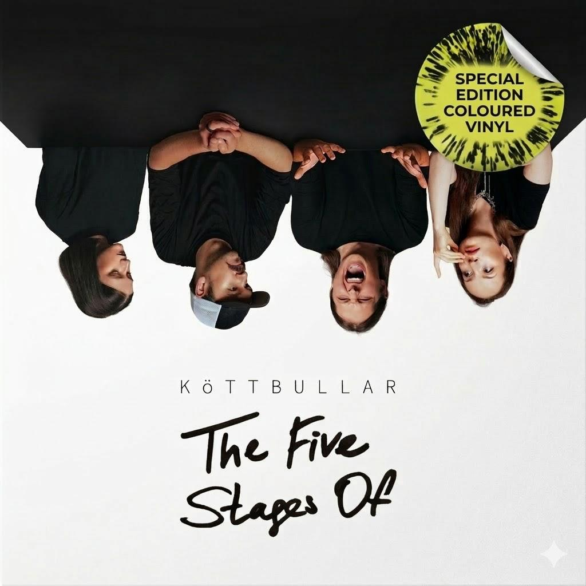
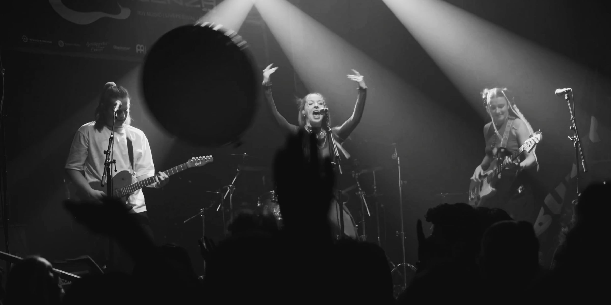
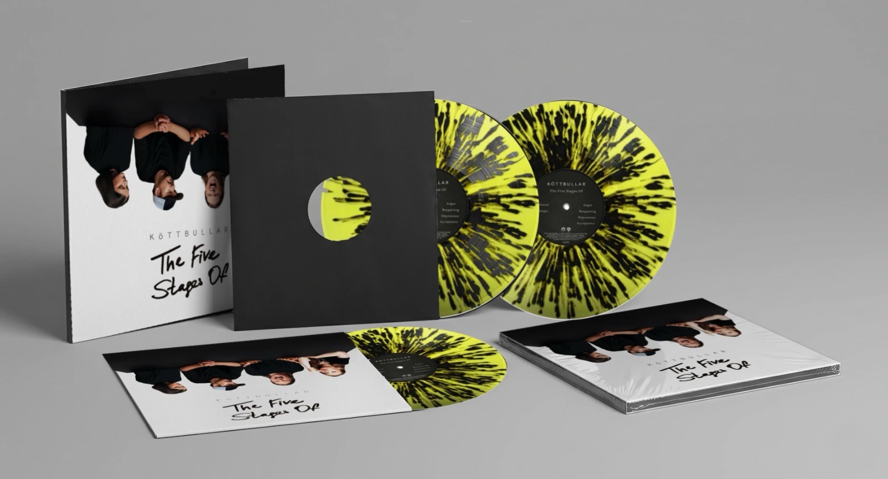

KöTTBULLAR
The Five Stages Of
Five songs. One story. 100 unique records.
An independent vinyl release from Munich, Germany.
The Five Stages Of is a five-track concept EP following the emotional journey of coming to terms with a life-changing experience, from denial to acceptance.
Limited to just 100 vinyl copies.

Not your everyday yellow vinyl
The design reflects the idea behind the music: even a single drop of darkness, like a bad mood, can change the whole picture. On yellow vinyl, these dark inclusions create a unique pattern on every record, a visual reminder that no two experiences are ever quite the same.
The result is something between abstract art and the unblinking eye of a predator.
Five songs. One story.
From denial to acceptance
- 01Denial
- 02Anger
- 03Bargaining
- 04Depression
- 05Acceptance
See it. Hear it.
Meet KöTTBULLAR
KöTTBULLAR are a Munich-based indie rock band combining punk energy, power-pop melodies and raw attitude.
In 2026, the band played around ten shows across Germany, including Berlin. The vinyl release gives fans a physical copy of the music to take home and keep.
Vocals
Guitar
Bass
Drums

The record
- 015-track concept EP
- 02100 individually patterned copies
- 03Yellow vinyl with black inclusions
- 04Independently released and shipped from Germany
One story. One hundred different records.

For independent record stores
We actively support record stores selling our release by featuring them on our social media and directing fans to their shops.